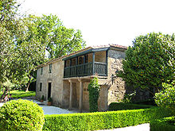

Cando a luniña aparece i o sol nos mares se esconde, todo é silencio nos campos, todo na ribeira dorme. Quedan as veigas sin xente, sin ovelliñas os montes, a fonte sin rosas vivas, os árbores sin cantores. Medroso o vento que pasa os pinos xigantes move, i á voz que levanta triste, outra máis triste responde. Son as campanas que tocan, que tocan en sons de morte, i ó corasón din: "N'olvides ós que para sempre dormen